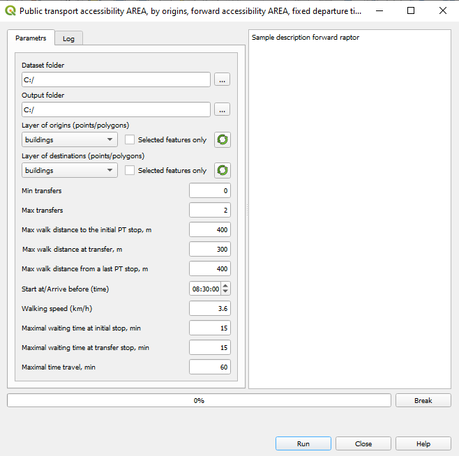
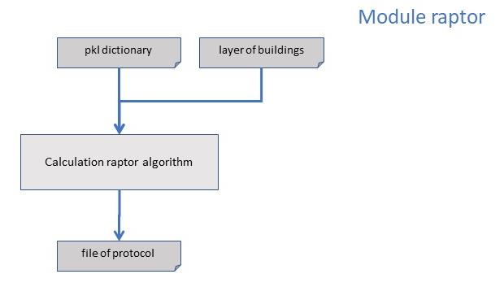

5. Public transport: Forward/backward accessibility AREA, fixed time¶
Данный режим использует для вычислений accessibility алгоритмы RAPTOR Forward and RAPTOR Backward
5.1. Предварительная подготовка¶
Необходимо предварительно подготовить следующие данные:
GTFS словарь (Смотрите раздел Build GTFS dictionary (pkl))
слой зданий
Слой зданий должен быть загружен в текущий проект QGIS.
5.2. Вычисление¶
Открыть плагин и выбрать пункт меню
Для режима Forward accessibility
Public transport accessibility AREA -> Forward accessibility AREA, fixed departure time.
Для режима Backward accessibility
Public transport accessibility AREA -> Backward accessibility AREA, fixed arrival time.

Откроется диалоговое окно настроек параметров.
В окне настроек необходимо указать следующие параметры:
Dataset folder: Выбор папки, в которой расположены файлы GTFS dictionary. В папке должны находиться файлы
stops.pkl,stoptimes.pkl,transfers_dict.pkl,idx_by_route_stop.pkl,routes_by_stop.pklи др.Output folder: Выбор папки для вывода протокола работы алгоритма. Необходимо, чтобы были права на запись на данную папку.
Layer of origins: Выбор слоя стартовых точек из текущего проекта.
Также необходимо указать прочие параметры в диалоговм окне.
Нажмите кнопку Run для запуска алгоритма.
В процессе работы алгоритма отображается информация о ходе вычислений на вкладке Log, в строке состояния и progressbar.
Процесс вычислений можно прервать, нажав на кнопку Break.
Note
Если выбрано более 10 зданий в слое buildings вычисления могут занять много времени. Отображается диалоговое окно c предупреждением.
5.3. Структура отчета¶
Attribute |
Value |
|---|---|
Origin_ID |
|
Start_time |
|
Walkn_time |
|
BStopn_ID |
|
Waitn_time |
|
Busn_start_time |
|
Linen_ID |
|
Riden_time |
|
AStopn_ID |
|
Busn_finish_time |
|
DestWalk_time |
|
Destination_ID |
|
Destination_time |
для режима Backward raptor в отчете дополнительный параметр
Arrives before |
5.4. Диаграмма потоков данных¶
